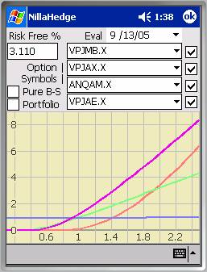
Volatility-Value ExplorerThe Volatility-Value Explorer provides a graphical view of the relative sensitivity of options to their underlying stock’s volatility. Up to four options can be compared simultaneously. The Volatility-Value Explorer has two modes of operation (really just ways to scale the Y-values), pure Black-Scholes and market price relative. In Pure Black-Scholes mode, the option’s current market price is ignored - only the risk free rate and the underlying stock’s price and volatility influence the plots. When the Pure B-S check box is unchecked, the option’s last known market price becomes the reference against which imputed option prices are scaled.
The Plot
The first thing to remember about volatility-value plots is that both axes depict ratios, not volatilities, option value, or percentages thereof. The horizontal axis depicts the ratio of experimental volatility to the current volatility for the option’s underlying stock, so represents the currently stored volatility for the underlying stock. The vertical axis similarly depicts the ratio of the imputed Black-Scholes value to the option’s last known market price or its Black-Scholes value (depending on the state of the Pure B-S checkbox), so represents the option’s relative value at a given relative volatility.
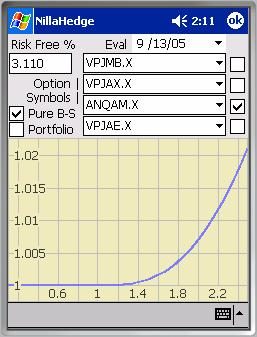
The colors assigned to option symbols are red, green, blue, and purple ordered from topmost symbol to bottom (e.g. VPJMB.X – red, VPJAX.X – green, etc.). When option positions exist in the database, the Portfolio checkbox will be enabled. When checked, a black line depicts the volatility-value curve for the current option portfolio with each option’s contribution weighted by the cost of the associated positions (refer to the screenshot below).
Plot Enabling Checkboxes
The checkboxes on the right side of the dialog enable/disable plotting the volatility-value for the option symbol immediately to its left. When options produce very high value-volatility ratios while others are less responsive, it can be difficult to assess the behavior of the low ratio options. In that case, you can disable (uncheck) the high ratio options, triggering the plot to re-scale to accommodate the remaining curves, thus providing more insight into the low ratio options’ behavior. Compare the first Volatility-Value Explorer plot with the one at right.
Pure Black-Scholes mode
When Pure B-S is checked, the plot  represents the imputed
option value divided by the Black-Scholes value at
the reference (underlying stock’s stored) volatility, consequently the
volatility-value curves all pass through . In market price mode
(Pure B-S is unchecked), the Y-values in the plot represent the imputed option
values divided by the option’s stored market price, so the volatility-value
curve can pass above or below .
represents the imputed
option value divided by the Black-Scholes value at
the reference (underlying stock’s stored) volatility, consequently the
volatility-value curves all pass through . In market price mode
(Pure B-S is unchecked), the Y-values in the plot represent the imputed option
values divided by the option’s stored market price, so the volatility-value
curve can pass above or below .
All things being equal, a premium option, whose currently stored market price exceeds its Black-Scholes value at the currently stored volatility, will pass below as VPJMB.X (red) does in the screenshot at right. Conversely, a bargain option, whose Black-Scholes value at the currently stored volatility is greater than the option’s currently stored market price will pass above as VPJAE.X (purple) does.
Portfolio
The Portfolio check box enables you to see how your entire option portfolio is positioned with respect to volatility risk relative to the currently stored volatility for the underlying stock. The Volatility-Value Explorer plots a curve which sums all option positions in your portfolio, each option’s contribution to the volatility-value curve being weighted by the cost of the position relative to the total cost of the option positions in the portfolio. It’s unchecked at right to better show the volatility-value curves for ANQAM.X and VPJAX.X.
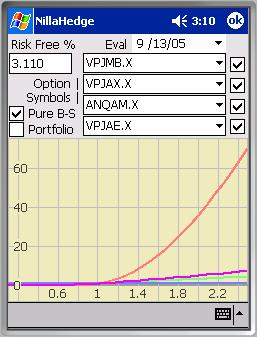
Evaluation DateThe Evaluation Date picker defaults to the current date, but can be set earlier or later to review how current parameters would affect volatility-value in the past or future.
Risk Free Rate
The Risk Free Rate edit box displays the currently stored value for the risk free rate. It’s expressed as a percentage with a default value of 3%.
Volatility Risk
Volatility risk has been a key factor in the financial difficulties at Barings Bank and at Long Term Capital Management, so it’s an issue of very real concern to professional portfolio managers. Accurately hedging against volatility risk is a complex topic beyond the scope of NillaHedge and this documentation, but the Volatility-Value Explorer does help you to quantify relative volatility risk, enabling you to make more informed choices.
The thing to remember about using the Volatility-Value Explorer is that is depicts what happens to option prices as a function of relatively heavy-handed modifications to the underlying stock’s volatility. An assumption in analyses of this sort is that the reference volatility is ‘reasonable,’ but it becomes a critical assumption when attempting to assess relative volatility risk between options not drawn on the same underlying stock.
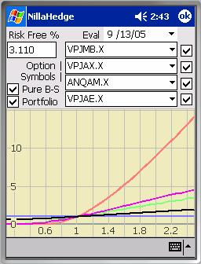
The Volatility SmileIf you are not already familiar with the volatility smile, it is a curve that results from plotting implied volatilities against strike price, with implied volatility increasing as the strike distances itself from the underlying stock price. In fact, the smile is really a surface. If you examine implied volatility versus time to maturity, you will note a similar effect. Part of the reason for non-constant implied volatility is that Black-Scholes theory assumes that stock returns are lognormally distributed, which means that the natural logarithm of stock returns is normally distributed. The lognormal assumption is attractive because it’s close to reality and analytically tractable, but historical returns show that the actual distribution has somewhat fatter tails and a higher peak at the mean.
So, volatility risk intuition is potentially clouded by the volatility smile and our imperfect understanding of how to compare apples and oranges, e.g. AMAT to INTC, etc. Both potential problems are ameliorated by scoping your comparisons to options in the same neighborhood with respect to expiration and moneyness (degree to which the underlying stock’s price is into the option’s profitable zone).
After using the Volatility-Value Explorer for a few minutes, you’ll surely notice that low value, high implied volatility options are much more likely to produce high option price ratios for a given multiple of volatility than those with higher intrinsic value, as illustrated by VPJMB.X in the previous four screenshots. VPJMB.X is a Jan-07 Put with a $10 strike selling for $0.15 while its underlying stock (AMAT) has a market value of $17.97.
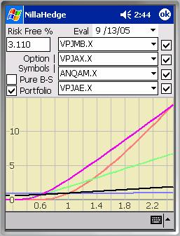
It’s wise to review the volatilities assigned to stocks
underlying any options of interest before comparing the volatility-value ratios
of the associated options. Without
venturing outside of the family of options on Applied Materials (AMAT), note
that the second pair of plots in the Volatility-Value Explorer section used a
reference volatility of 0.231 (nearly VPJAE.X’s
implied volatility), causing VPJMB.X (red) to appear to be selling at a high
premium and producing vastly different volatility-value ratios in Pure B-S and
market price modes. In the next pair of
plots in this section, the reference volatility is the implied volatility for
VPJMB.X ( 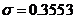 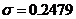
Alternatively, in the plot below right, we have four puts
all expiring in Oct05 with ANQVR.X (implied 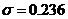 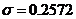 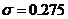 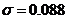 Certainly, we’ve come to
expect that out-of-the-money options exhibit higher volatility sensitivity, but
since I mentioned them, the question you might really want to ask is “What’s up
with ANQVD.X’s implied volatility?” The first thing of note is its extremely low vega = 0.0011,
while its temporal brethren have vegas on the interval [1.78 .. 2.29), but perhaps more to
the point, its delta = -1.0 and
consequently its probability of closing in-the-money is 100%, meaning that
other factor sensitivities, including volatility, are not particularly
influential at the current stock price.
Certainly, we’ve come to
expect that out-of-the-money options exhibit higher volatility sensitivity, but
since I mentioned them, the question you might really want to ask is “What’s up
with ANQVD.X’s implied volatility?” The first thing of note is its extremely low vega = 0.0011,
while its temporal brethren have vegas on the interval [1.78 .. 2.29), but perhaps more to
the point, its delta = -1.0 and
consequently its probability of closing in-the-money is 100%, meaning that
other factor sensitivities, including volatility, are not particularly
influential at the current stock price.
One conclusion you might draw from the foregoing discussion is that you should always have a good understanding of what you’re looking at in the Volatility-Value Explorer, but I hope the walk away benefit will be your recognition of the degree to which volatility can drive option value, so you won’t enter positions without assessing the risks and grappling with the model parameters beforehand.
Compensating Volatilities
One technique that partially compensates for inaccuracies
introduced by the lognormal assumption is to use an Exponentially Weighted
Moving Average (EWMA) to compute the underlying stock trend and
volatility. J.P. Morgan’s RiskMetrics group produces well regarded Value-at-Risk
assessments using lognormal models in conjunction with EWMA volatilities. In Risk Management, A Practical
Guide, Alan Laubsch recommends using decay factor 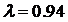 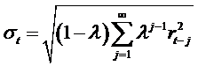 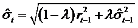